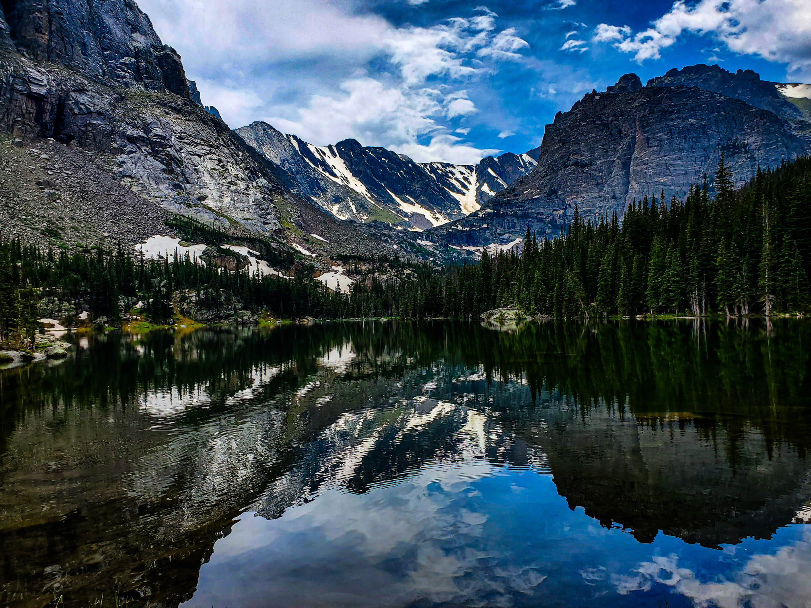
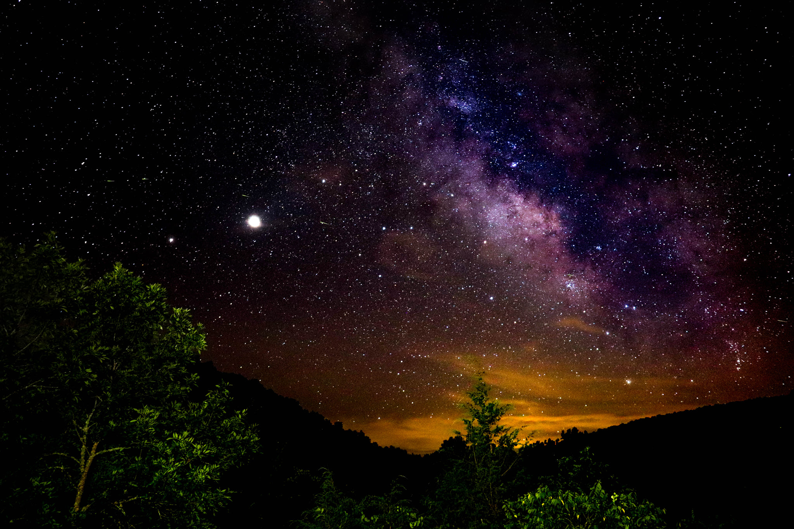

My wife and I both love photography, Primarily, nature and astro-photography. Our favorite place to take photos is Colorado. We've been many times and every time gives us more photos and the oportunity to tell more stories!
We also love going to Buffalo River in Arkansas. It is where we have gotten most of our pictures of the stars! This shot is my favorite, you can see Jupiter (the brightest light), and Saturn (the dimmer light to the left of Jupiter) in this photo.
We own quite a bit of camera gear but there is plenty that we don't own. For some of the gear that we use rarely, we rely on Lensrentals.com. Not only can you rent from them but you can buy used products as well!